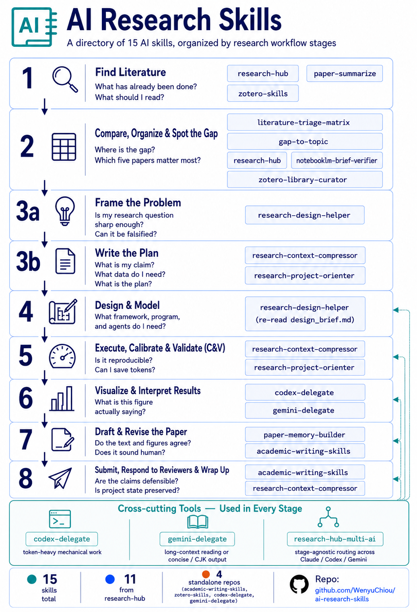

Literature triage, research design, project context, manuscript writing, and multi-AI delegation — packaged as a 5-plugin Claude Code marketplace. One command installs everything.
Each skill addresses one workflow stage. Cross-cutting tools (codex-delegate, gemini-delegate, research-hub-multi-ai) work at any stage — usable solo or composed across plugins.

14 skills · 5 plugins · cross-cutting delegation primitives at every stage.
Each plugin bundles 2–4 skills. Install one at a time as you need them, or grab the full marketplace with one command.
Operate your literature stack from Claude Code: search papers, save to Zotero, build Obsidian notes, query NotebookLM. CLI · MCP · REST · dashboard.
Rigorous paper writing, revision, reviewer response, submission checklists. Findings-first structure, banned-word audit, claim-evidence ledger.
Delegate token-heavy, mechanical coding work to Codex CLI while Claude plans, reviews, and accepts. Cost-aware routing pattern for production.
Delegate large-context synthesis, long-form English/Chinese drafting, and second-opinion review to Google's Gemini CLI. Wrapper-based execution.
Full CRUD on your Zotero library — search, add, classify, annotate, organize references. Dual-API architecture (local read · web write).
Requires Claude Code (https://claude.ai/code). The plugin
framework loads each skill on demand based on your prompt context.
# Add the marketplace
claude plugin marketplace add WenyuChiou/ai-research-skills
# Install all 5 plugins (or just the ones you need)
claude plugin install research-hub@ai-research-skills --scope user
claude plugin install academic-writing-skills@ai-research-skills
claude plugin install codex-delegate@ai-research-skills
claude plugin install gemini-delegate@ai-research-skills
claude plugin install zotero-skills@ai-research-skillsFor installation troubleshooting, persona-based setup, and per-skill verification, see the full install guide.
All docs are also available in 繁體中文 · see the same filenames with
.zh-TW suffix in /docs/.
ai-research-skills is one of several open-source maintainer
projects. The full picture is curated in
awesome-agentic-ai-zh
— a 7-stage trilingual learning roadmap for agentic AI (★ 519 in week 1)
where this marketplace lives in §13 (research workflow skills).